CUNY SPS IS 608 Final Projects
As part of the Master's Degree in Data Analytics at CUNY's School of Professional Studies, students complete class IS 608, an introduction to data visualization tools.
For their final project, students in IS 608 were assigned to create a public visualization using data relevant to a current policy, business, or justice issue. Students were encouraged to use any dataset they could find, as long as the data was either public or the student had permission from the data’s owner/administrator to work with it and share it.
Fall 2014
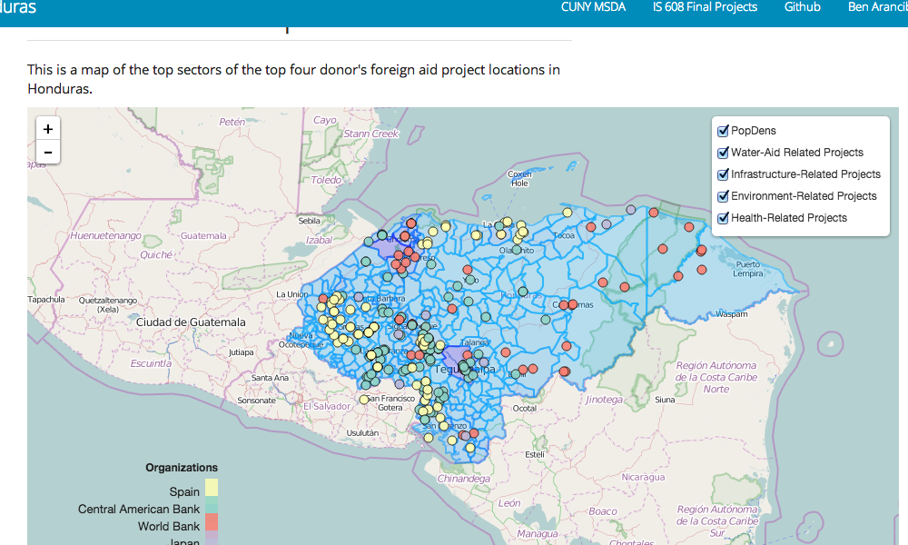 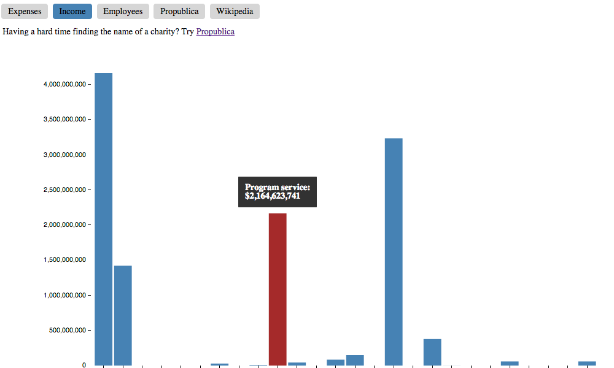 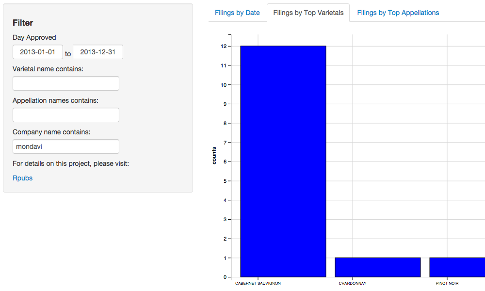 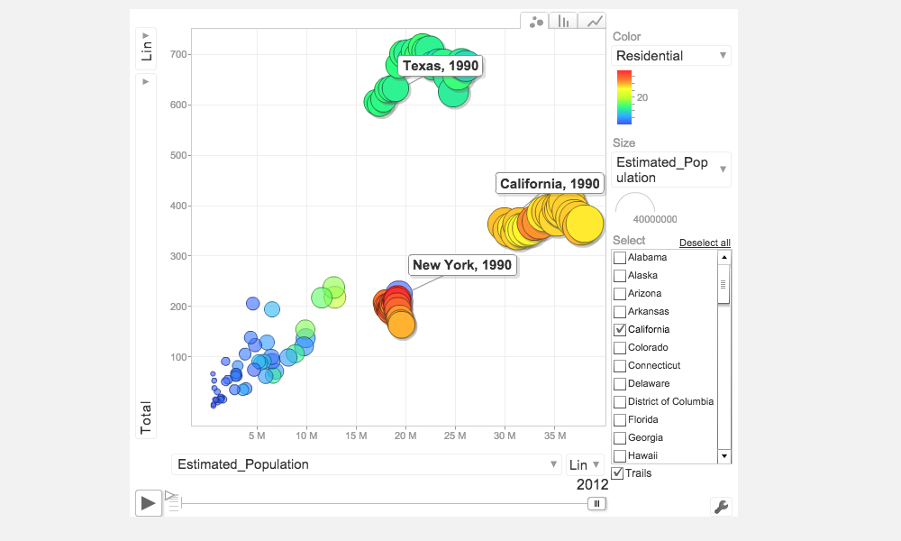Student Projects
Ben Arancibia: Foreign Aid Projects in Honduras (leaflet, d3.js)
Brett Burk: Nonprofit Financial Information (d3.js)
Matt Moramarco: Wine Filing Data Explorer (with writeup here) (ggvis, shiny)
William Chan: State CO2 Emissions (Google Charts)
Spring 2014
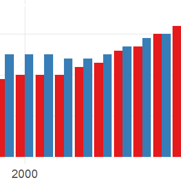 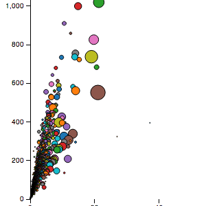 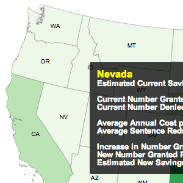 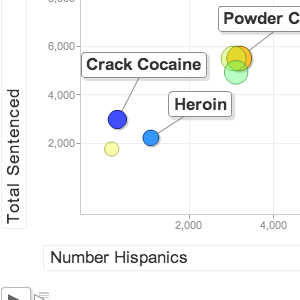 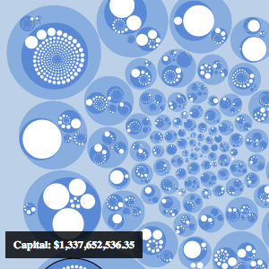 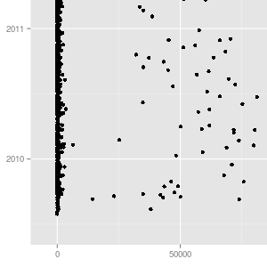 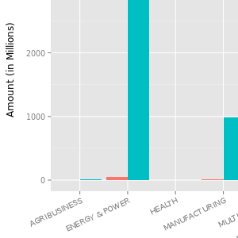 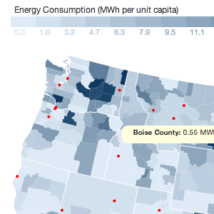 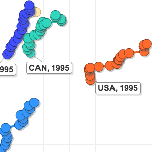
Student Projects
Brian Chu: Visualizing Potential Savings From Applying The Crack Cocaine Fair Sentencing Act (d3.js)
Sharad Gurung: Visualizing Medicare Spending (d3.js)
Partha Banerjee: US Trade And Development Agency Funding (shiny, ggplot2, Google Charts) Note: Site taken down indefinitely
James Quacinella: US Energy Consumption per County (iPython Notebook and d3.js)
Steve Dunn: Healthcare Expenditure As A Percentage Of GDP (Rmarkdown, Google Charts)
Albania Nicasio: Race and Retroactive Application of the Fair Sentencing Act (Google Charts)
Vincent Ying: Summary of Massachusetts Budget (shiny, ggplot2) Note: Site taken down indefinitely
Rohan Fray: The Cost of Higher Education in the US (ggplot2)
Aaron Palumbo: Massachusetts Budget Accounts (d3.js, Flask, BigQuery)
Acknowledgements
We were fortunate to have several great people and organizations help us create and host these visualizations. I would like to thank them here for their contributions of time and resources:
- Microsoft, for granting us an Azure academic pass, which is allowing us to host some of the larger projects
- The Massachusetts House Committee on Bonding, Capital Expenditures and State Assets for providing us with data on state spending by authorization
- The Brennan Center for Justice for asking us to look at the fascinating data around the Fair Sentencing Act of 2010
- The US Trade and Development Agency for providing data around their grant history
- The team at DataKind, in particular Peter Darche, for speaking with us and sharing a number of data sets
- Noel Hidalgo of BetaNYC for speaking with us about the power of open data on a local level
- The team running the Master's in Data Analytics program at CUNY, in particular Paul Russo and Andy Catlin, for their support for this project and all of the work we have done
- And finally, the students: everything you are seeing is their work, with only minor tweaks to get projects online; most of the students started the semester with little or no knowledge of visualization libraries or JavaScript and I could not be prouder of the progress they made this semester
Thank you for your interest in our class's work. If you are interested in the City University of New York's Master's Degree in Data Analytics you may click here, and if you have any questions for me you can contact me via twitter or at [my twitter handle] at gmail
Thanks,
Josh Laurito
City University of New York